Decipherment
Day 14: Cuneiform
Review
Review
- Which three languages are found in the Behistun inscription?
- What are pictographs?
- What was the linear orientation of Babylonian? Did it have more or fewer signs than Old Persian?
Today
- Finishing Old Babylonian
- History of writing
- More in-depth look at cuneiform
- Cuneiform activity
Old Babylonian
Code of Hammurabi
If a man laid a charge of witchcraft against a man but has not convicted him, the one against whom the witchcraft charge was laid will go to the River; he will dive into the River, and
if the River has defeated him, his accuser will take away his estate;
if the River has cleared that man and he has come out alright, the one who laid the witchcraft charge against him will be executed; the one who dove into the River will take away the estate of his accuser.
Code of Hammurabi
Identify as many symbols as you can. Hint: begin with šum-ma!
šum-ma a-wi-lum ki-iš-pí e-li a-wi-lim id-di-ma la uk-ti-in-šu ša e-li-šu ki-iš-pu na-du-ú a-na dÍD i-il-la-ak dÍD i-ša-al-li-a-am-ma
šum-ma dÍD ik-ta-ša-sú mu-ub-bi-ir-šu É-sú i-tab-ba-al
šum-ma a-wi-lam šu-a-ti dÍD ú-te-eb-bi-ba-aš-šu-ma iš-ta-al-ma-am ša e-li-šu ki-iš-pí id-du-ú id-da-ak ša dÍD iš-li-a-am É mu-ub-bi-ri-šu i-tab-ba-al
History of Writing
History of Writing
Where did writing begin? There are two main theories.
Monogenesis
- Earlier scholars :
- Monogenetic theory: writing originated once – there was only one transition from picture to writing
- Writing then spread by borrowing and stimulus diffusion.
- Monogenetic theory: writing originated once – there was only one transition from picture to writing
Monogenesis: which was first?
Gelb (1963) looked at seven candidates for original writing systems
- Sumerian
- Proto-Elamite
- Egyptian
- Cretan
- Hittite
- Indus Valley
- Chinese
1) Sumerian

2) Proto-Elamite

3) Egyptian

4) Cretan (Linear A)

5) Hittite (cuneiform)

6) Indus Valley

7) Chinese (oracle bone)

Monogenesis: which was first?
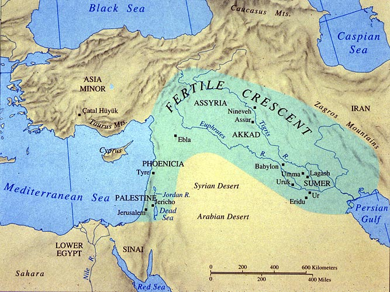- All but the last two are in geographical proximity to the eastern Mediterranean and to Mesopotamia.
Monogenesis: which was first?
- Gelb: Sumerian cuneiform must be the original form of writing – all other writing systems derive from it
Monogenesis: which was first?
- There is archaeologically documented contact between Mesopotamia and the Indus Valley, the location of the still undeciphered Indus Valley script.
- More later!
Monogenesis: which was first?
- But what about China?
- And other systems, like Mayan in Mesoamerica? Were they in contact with the Mesopotamians?
Monogenesis: which was first?
- Maybe China…
- But the Mayans?
Monogenesis
- Monogenetic theory cannot be true:
- Writing evolved independently in at least three different areas:
- China (1700 bce)
- Mesoamerica (700 bce): a dozen or so, probably related – Zapotec, Aztec, Maya, Olmec.
- Mesopotamia (4000 bce) – Sumerian > Akkadian / Babylonian > Hittites, etc.
Invention of Writing
- In each of these cases, writing was invented in culture that was:
- was technologically advanced;
- a sedentary civilization;
- had built cities;
- had a division of labor and a surplus economy.
How did writing originate?
- The dominant theory, especially among early scholars
Pictographic Theory:
Iconic pictures of concrete concepts evolved into abstract linguistic signs
Pictographs
How did writing originate?
- Pictograph –> logogram –> phonogram
- Tendency for a shift in iconicity:
Celestial object: “sky, heaven, star” –> syllable /an/
Early Pictographs
- So, if pictographs are ultimately the source of our writing systems, where do we find examples of pictographs that are earlier than our first attested writing systems?
Cave Paintings – Indonesia

Cave Paintings – France
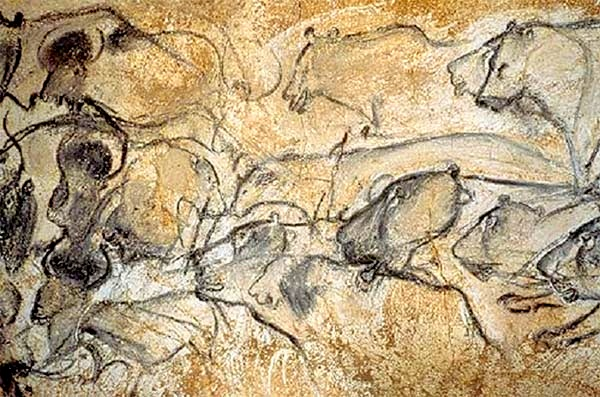Chauvet-Pont-d’Arc Cave, around 30,000 years ago
Cave Paintings – San (South Africa)
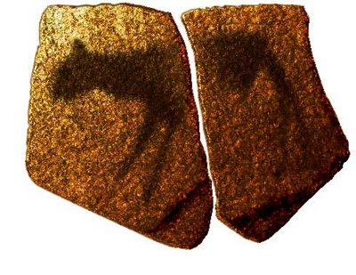Stone slab, Apollo 11 cave, Namibia – around 25,000 years ago
Cave Paintings – India
Bhimbetka Cave, around 12,000 years ago
Cave Paintings – Australia
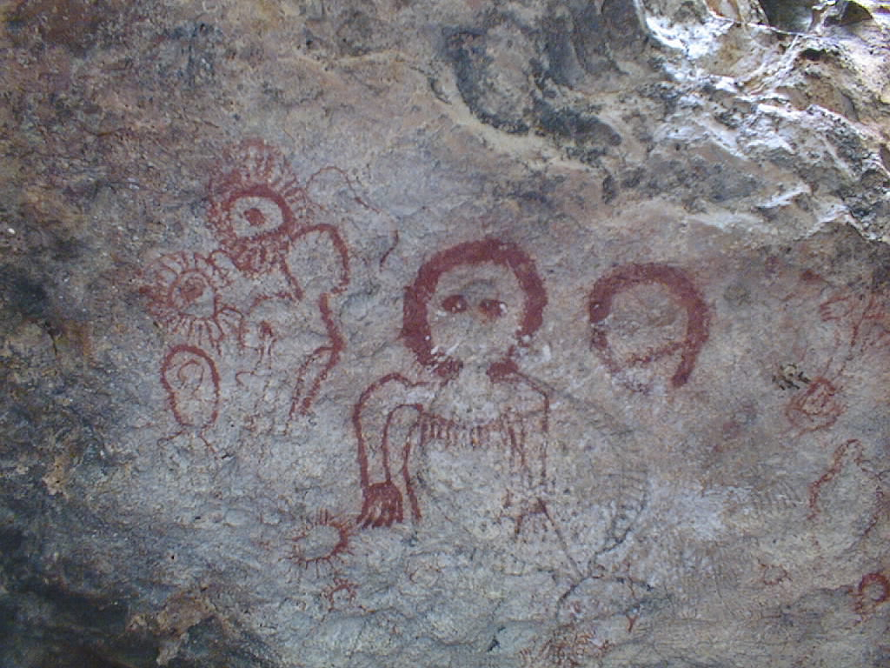Kimberly cave paintings, the Wandjina around 5,000 years ago
Cave Paintings – Australia
Kimberly cave paintings, the Wandjina around 5,000 years ago
Think Back
Should we consider cave paintings to be writing? Why or why not?
Pictographs = Proto-Writing
Pictographs = Proto-Writing
It would be like…
How Cuneiform Works
Mesopotamia
In the Middle East, writing was invented to record business activity.
Allowed the keeping of reliable records for palaces and temples of grain, produce, livestock, textiles.

Cuneiform
Stylus on damp clay; if left to dry, extremely durable. Why clay?
With the stylus, you can make wedge-shaped marks cuneus ‘wedge’.

Cuneiform

MI.NI.GIS
- Stylus
- Strokes
- Winkelhaken
Pictographic Theory
The basic idea: iconic pictures of concrete concepts evolved into abstract linguistic signs
If the pictographic theory is correct, how should cuneiform have evolved throughout the years?
How should it have begun? How should it have changed?
Pictographic Theory: What We’d Expect
- Loss of iconicity
- iconic sign –> abstract symbol
- pictograph shifts to a writing character (word or sound)
The Pictographic Theory: What We Find

The Pictographic Theory: What We Find
The earliest evidence from Uruk shows:
most of the 1500 signs are abstract signs
very few pictographs
wild animals–wolf, fox
advanced technology–chariot, sledge
The Pictographic Theory: What We Find
lots of abstract signs which are likely connected with known cuneiform characters.
- signs for bread, beer, sheep, cattle, clothing, numbers
Explaining Away the Evidence
How do advocates of the pictographic hypothesis explain away this problem?
Because not obviously pictographic, some have concluded: there was already an advanced system in place.
Explaining Away the Evidence
But there’s no evidence for a prior, more obviously pictographic system!
Some have explained this away by saying that the antecedents were on perishable media (parchment, papyrus, wood).
- This may be true – but it’s an unfalsifiable hypothesis!
Denise Schmandt-Besserat

Schmandt-Besserat’s Theory
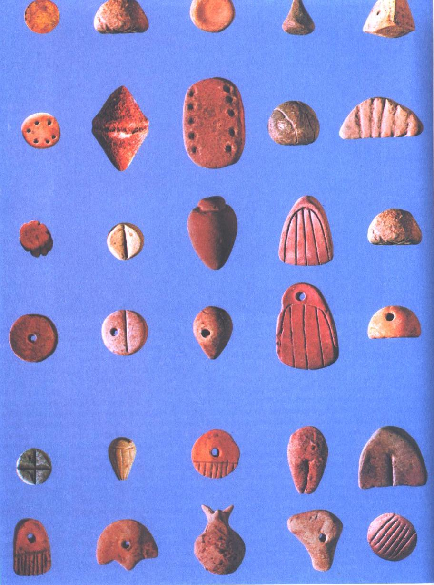Tokens: 7500-3100 BCE
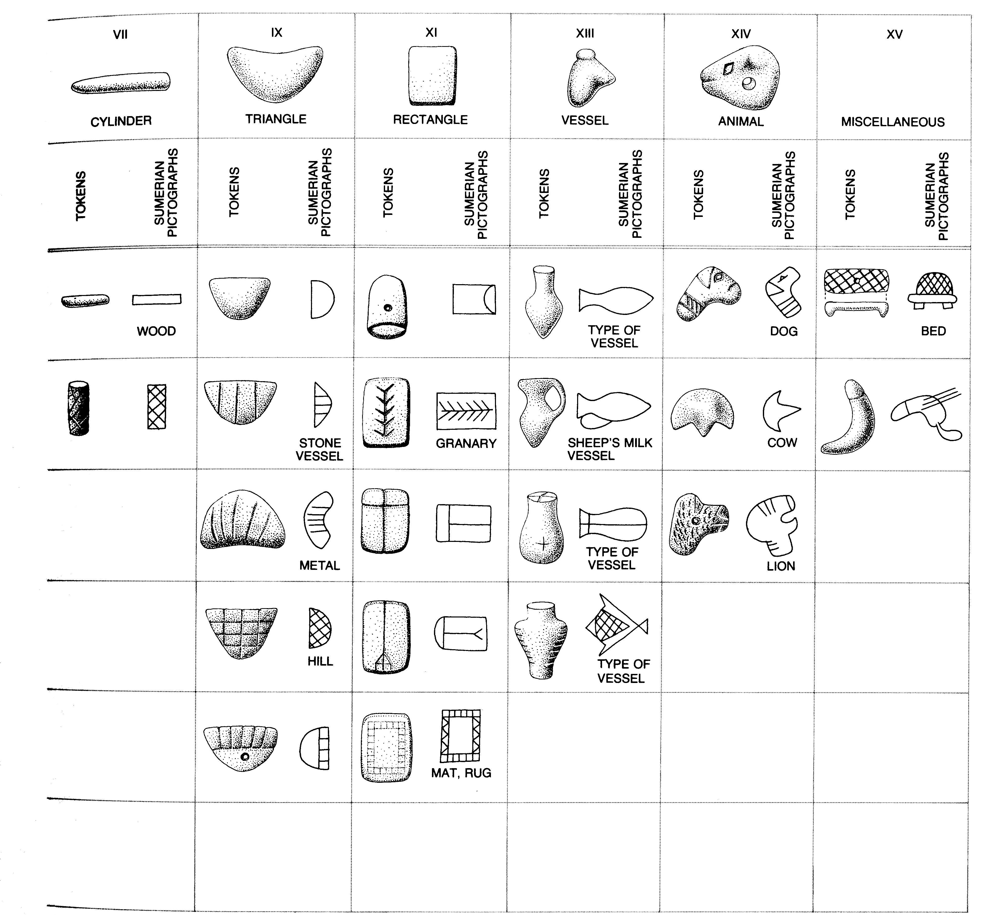Bulla

Token finds
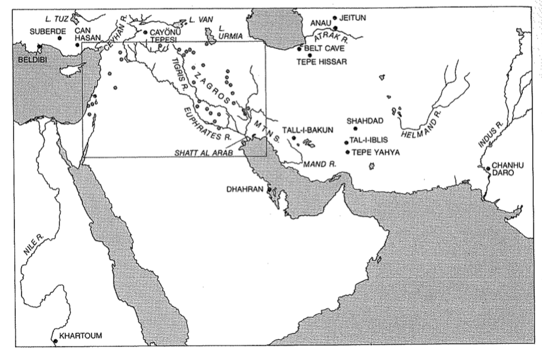Other examples of Counting technologies

Ishango Bone – menstrual tally stick (?) (ca. 18000 bce, Congo)
Other examples of Counting technologies
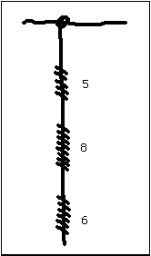Quipu [khipu] knots – Incas
Tokens to Cuneiform

Tokens to Cuneiform
In the late 4th mill. bce, indigenous recording system writing
S-B has linked at least 33 cuneiform signs with 2D tokens.
Explains instances of non-iconic pictographs in early cuneiform, such as ‘sheep’
Big Leap: the creation of Phonographic Signs
In this way, Sumerians are able to write word endings (like cases)
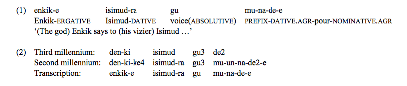third millennium: roots only
second millennium: affixes added
How were Phonographs created?
 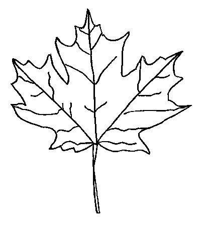
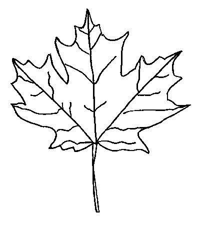
The Rebus Principle
The use of an easily pictured object to stand for its more abstract homonym.
Rebus Principle


Rebus Principle
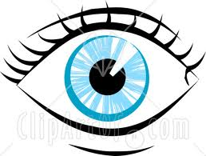  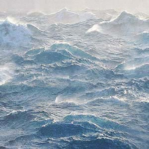
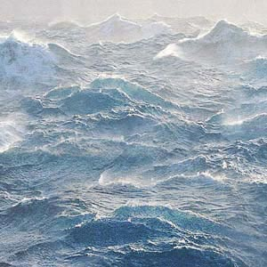 
Fun with Rebuses
With your neighbors:
Examine the next three rebuses and try to decipher their meanings.
Rebus Principle


Rebus (Shealynn Hall [2011])
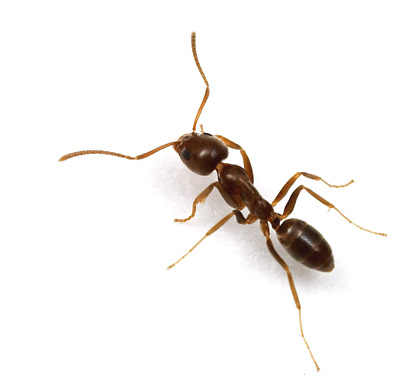
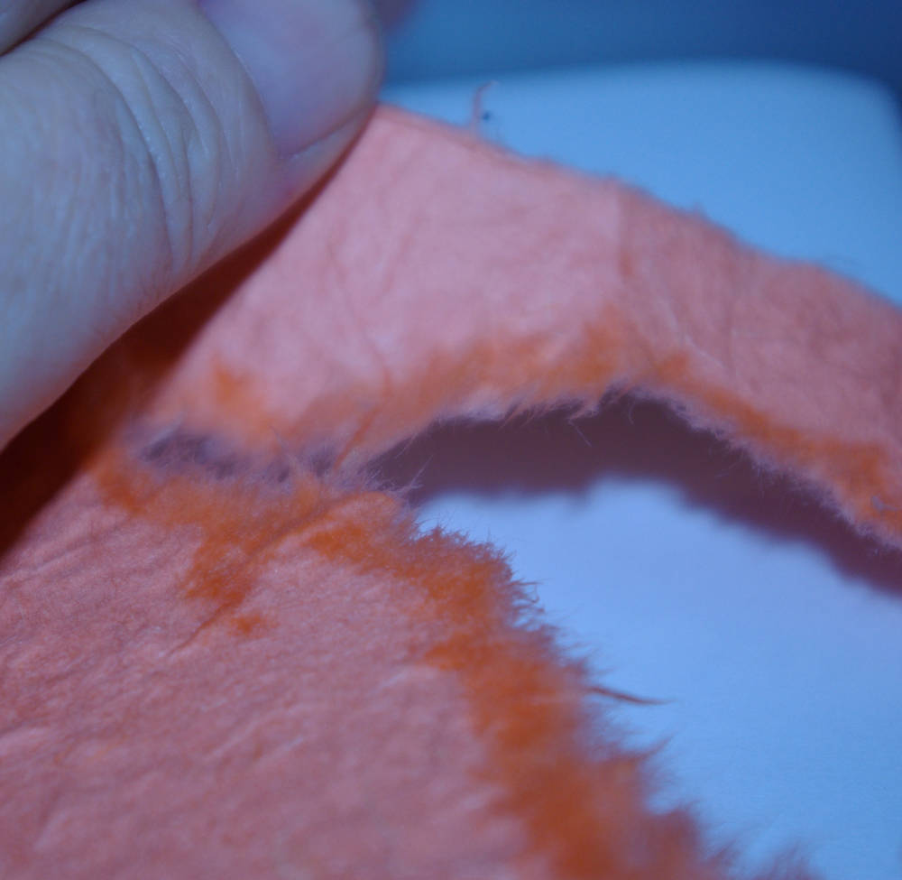
Rebus (Hillary Smith [2011])
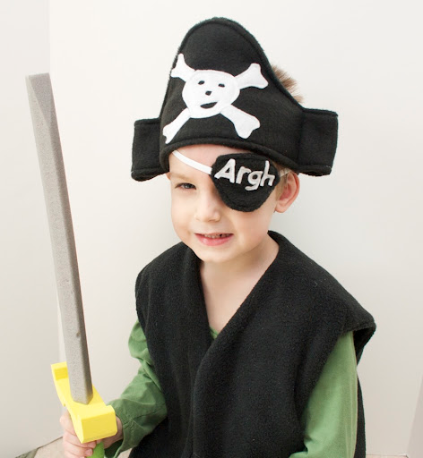 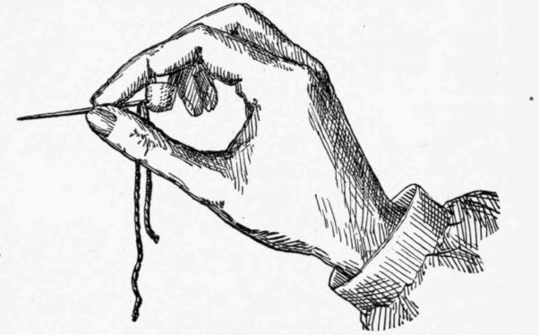 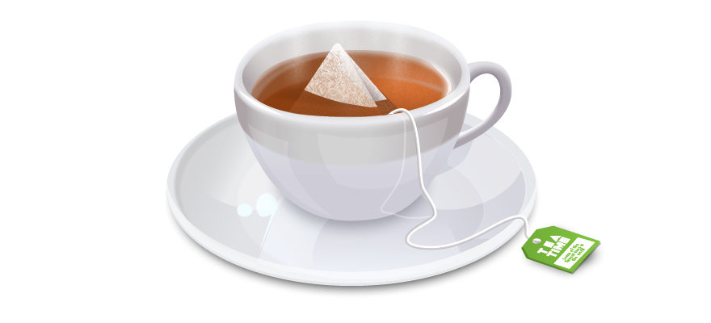
The Rebus Principle
The use of an easily pictured object to stand for its more abstract homonym.
Creation of Phonographs: ‘Barley’ <še>
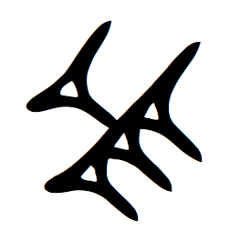Creation of Phonographs: ‘tool’ [ba] 🡪 ‘distribute’ [ba]
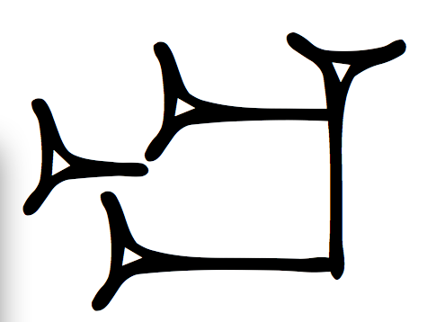Creation of Phonographs: ‘body’ [su] 🡪 ‘replace’ [su]
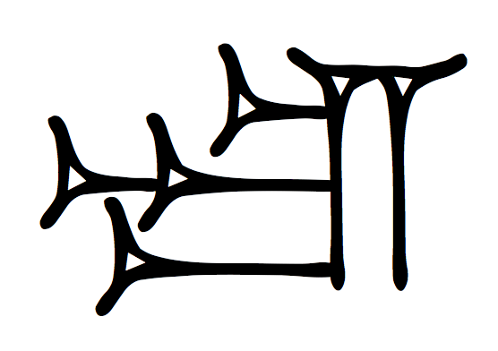Creation of Phonographs: ‘plant’ [sar/šar] 🡪 ‘write’
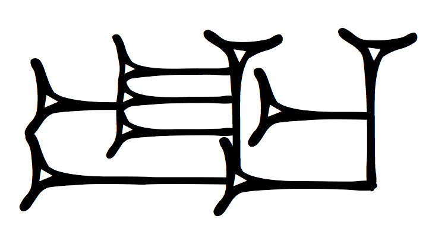Creation of Phonographs: ‘arrow’ [ti] 🡪 [til] ‘life’
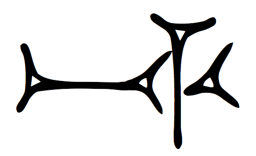Semantic Extension
Starting point: [ka] ‘mouth’
🡪 [gu] ‘shouting’
🡪 [inim] ‘word’
🡪 [dug] ‘speak’
🡪 [zú] ‘tooth’
Semantic Extension
Starting point: [apin] ‘plow’
🡪 [engar] ‘farmer’
🡪 [uru] ‘to plow’
gu gú gù gu₄ gu₅ …
- In these two ways, lots of different symbols came to be!
- Overall, there are 14 different [gu]’s!
Simplification of Signs
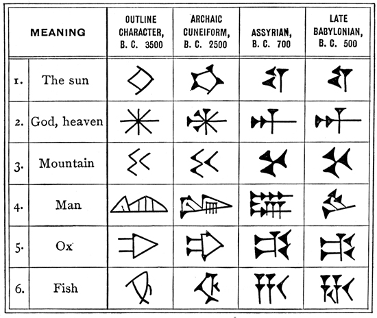Determinatives
- Remember dÍD?
Multifunctionality of Signs
Widespread multifunctionality therefore leads to
- homophony (e.g. several sources for [gu])
- polyphony (KA has several possible phonetic values) - - polysemy (KA has several possible semantic values)
These are fundamental features of cuneiform over its 3000-year history.
One final point: earliest texts
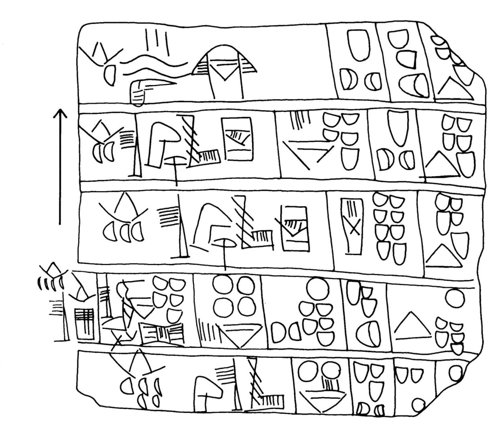Evolution of Signs